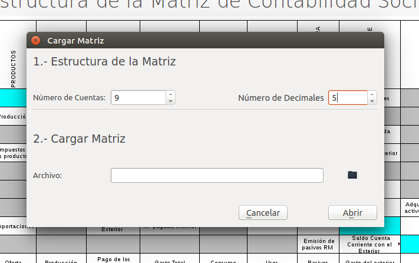
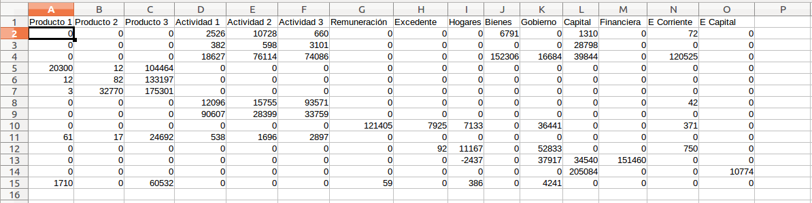
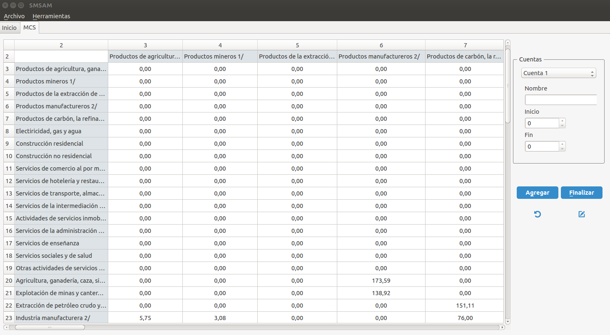
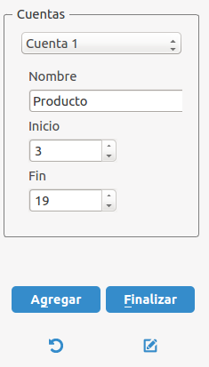
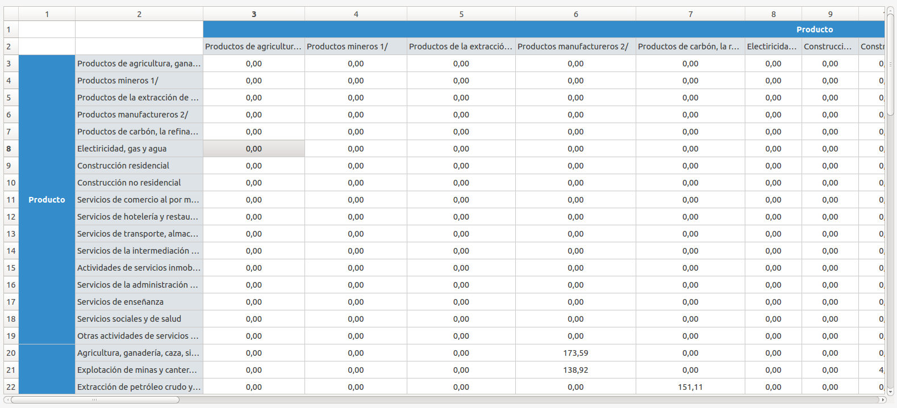

Sistema para el Manejo de las Matrices de Contabilidad Social
Cargar una Matriz
El primer paso para utilizar el SMCS, es cargar una matriz, para lo cual debe dirigirse al menú Archivo (acceso rápido: Alt+a) y presionar la opción Cargar Matriz. El sistema le mostrará una ventana solicitándole el archivo .csv donde tiene la matriz de contabilidad social.

Figura 2: Cargar Matriz
Estructura del archivo base: En la primera fila del archivo deben estar los nombres de cada uno de los componentes de la matriz, tal y como se muestra en la Figura 3. Como se está trabajando con matrices de contabilidad social, por lo que los componentes de las columnas deben repetirse en las filas.Es importante que guarde el archivo como un .csv.

Figura 2: Cargar Matriz
Para cargar la matriz debe introducir el número de cuentas que componen la matriz, y el separador utilizado en el archivo .csv (; ). El año y el país es opcional y permite recordarle al usuario las características de la matriz objeto de estudio. En la segunda sección de la ventana especificará el directorio donde se encuentra el archivo. Por último, presione el botón Abrir.
La matriz cargada se muestra en una pestaña, bajo el nombre de MCS, como se observa en la Figura 4 se presenta una tabla de doble entrada, con los mismos componentes tanto en las filas como en las columnas. En el lado derecho se muestra un panel, donde deberá señalar que componentes forman parte de cada una de las cuentas, también le podrá dar un nombre.

Figura 4: Pestaña -- MCS
Nombre de las cuentas: Seleccione la cuenta (cuenta 1, cuenta 2, ... cuenta n), en el campo de texto introduzca el nombre de la cuenta (producto, actividades, factores de producción, distribución del ingreso, entre otros.) e indique en los campos correspondientes el número de fila donde inicia de cuenta seguido de la celda que finaliza la cuenta, tal y como se muestra en la figura 5, luego presione el botón Agregar. El sistema le preguntará si está seguro en agregar el nombre a la cuenta.

Figura 5: Panel -- Cuentas
A medida que el indique al sistema el nombre de las cuentas, este le mostrará la matriz indicado las cuentas (color azul) y componentes

Figura 6: Pestaña -- Matriz
Las opciones que se encuentran en el menú se activarán una vez que indique el nombre y tamaño (Celda de inicio y fin ) de cada una de las cuentas y presione el botón Finalizar.